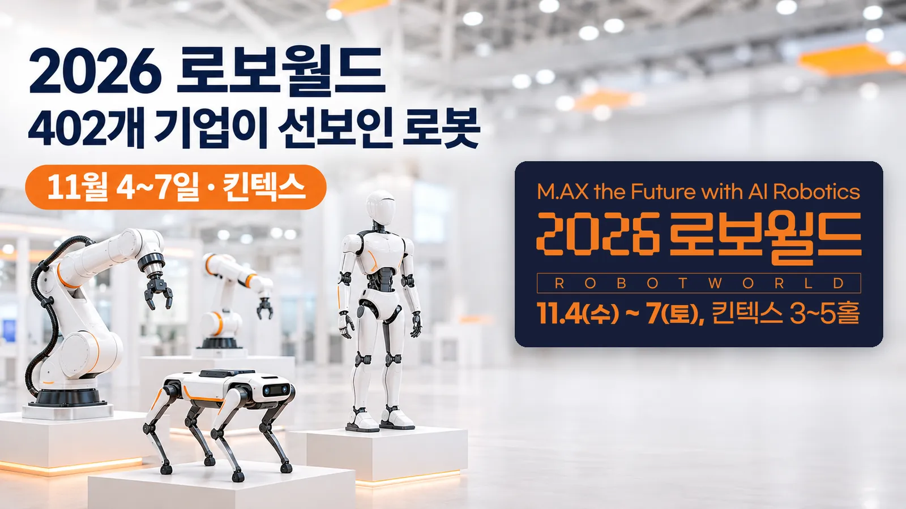

이지 자료실 · AI 도구툴
2026 로보월드 11월 4~7일 킨텍스, 402개 기업이 선보인 로봇 정리
작성 · 글 이지연 · 산업통상부 보도자료(11.4)와 로보월드 공식 누리집(11.9 확인) 기준
안녕하세요, AI융합 예술교육가 이지쌤 이지연입니다. 산업통상부가 주최한 로봇 전시회 '2026 로보월드'가 11월 4일부터 7일까지 경기 고양시 킨텍스에서 열렸습니다. 이 글에는 행사 규모, 내년 로봇 공공보급을 앞두고 마련된 홍보관, 전시장에서 선보인 것, 컨퍼런스와 상담회, 관람 조건을 산업통상부 보도자료와 공식 누리집을 기준으로 정리했습니다.
- 산업통상부가 주최한 '2026 로보월드'가 11월 4일(수)부터 7일(토)까지 고양 킨텍스 제1전시장 3~5홀에서 열렸습니다. 산업통상부는 402개 기업·기관이 1,198개 부스를 운영해 역대 최대 규모라고 밝혔습니다.
- 내년부터 처음 시행되는 로봇 공공보급을 앞두고 'K-로봇 공공프리마켓' 홍보관에서 22개 기업이 휴머노이드, 4륜·4족 로봇, 돌봄 로봇 등을 전시하고 핵심 기능을 시연했습니다.
- 11월 4~5일 국제로봇비즈니스컨퍼런스는 제조 AX, 휴머노이드와 피지컬 AI, 모빌리티의 3개 트랙, 36개 세션으로 열렸습니다. 휴머노이드·푸드테크·헬스케어 등 6개 특별관과 교육용 로봇 체험존도 운영됐습니다.

| 행사 | 2026 로보월드(ROBOT WORLD), 행사 구호 'M.AX the Future with AI Robotics', 국제로봇비즈니스컨퍼런스 동시 개최 |
|---|---|
| 주최·주관 | 주최 산업통상부, 공동 주관 한국AI로봇산업협회·한국로봇산업진흥원·제어로봇시스템학회 |
| 언제 | 2026년 11월 4일(수)~7일(토). 수~금 오전 10시~오후 5시, 토 오전 10시~오후 4시 |
| 어디서 | 경기 고양시 킨텍스 제1전시장 3~5홀 |
| 규모 | 402개 기업·기관, 1,198개 부스(2025년 365개사, 1,027개 부스) |
| 입장료 | 사전등록(10월 24일 마감)·초청장 소지자 무료. 현장 개별 관람 성인 12,000원, 초·중·고 학생 6,000원, 7세 이하 무료. 단체 관람 5,000원 |
| 문의 | 로보월드 사무국 02-780-3074, info@robotworld.or.kr |
| 누리집 | robotworld.or.kr |
1. 2026 로보월드는 어떤 행사였나
로보월드는 산업통상부가 주최하는 로봇 전시회로, 올해는 한국AI로봇산업협회·한국로봇산업진흥원·제어로봇시스템학회가 함께 주관했습니다. 행사 구호는 'M.AX the Future with AI Robotics'였고, 같은 기간 국제로봇비즈니스컨퍼런스가 함께 열렸습니다.
산업통상부 보도자료에 실린 해마다의 참가 규모는 다음과 같습니다.
| 연도 | 참가 기업 | 부스 |
|---|---|---|
| 2023 | 271개사 | 821개 |
| 2024 | 347개사 | 895개 |
| 2025 | 365개사 | 1,027개 |
| 2026 | 402개 기업·기관 | 1,198개 |
2. 공공보급 로봇을 모은 'K-로봇 공공프리마켓'
산업통상부는 내년부터 로봇 공공보급이 처음 시행된다고 밝혔습니다. 이를 앞두고 전시장에 'K-로봇 공공프리마켓' 홍보관을 열어 공공보급 대상인 휴머노이드, 4륜·4족 로봇, 돌봄 로봇 등을 전시하고 핵심 기능을 시연했습니다. 보도자료에 따르면 공공 수요기관은 10월 28~29일 열린 '2026년 공공수요 연계 4륜·4족 로봇 제품 설명회'에 이어 이번 전시회에서도 로봇 성능을 직접 점검하고 기업과 세부 논의를 이어 갑니다.
보도자료에 실린 참여 기업 22곳을 완제품 종류별로 나누면 다음과 같습니다. 두 종류를 낸 기업은 두 줄에 모두 적었습니다.
| 로봇 종류 | 참여 기업 |
|---|---|
| 휴머노이드 | 디든로보틱스, 레인보우로보틱스, 로보티즈, 로브로스, 에이딘로보틱스, 에이로봇, LG전자, 유엔디로보틱스, 코라스로보틱스, 투모로로보틱스, 티로보틱스 |
| 4족 로봇 | 도구로보틱스, 디든로보틱스, 라이온로보틱스, 레인보우로보틱스, 유엔디로보틱스 |
| 4륜 로봇 | 도구로보틱스, 로보티즈AI, 지오로봇, 클로봇, 트위니 |
| 돌봄 로봇 | 마인드로, 토룩 |
| 보행보조 로봇 | 에이드올 |
| 착용 로봇 | 팀로보틱스, 휴로틱스 |
3. 전시장에서 선보인 것
행사는 국산 휴머노이드의 K-팝 안무와 태권도 품새 공연으로 문을 열었습니다. 산업통상부 보도자료에 따르면 디든로보틱스, 모토마인드 같은 청년·스타트업 기업이 기술을 소개했고, 4개 대학 학생들이 오픈소스 코드로 학습시킨 휴머노이드를 시연했습니다.
아시아경제와 산업일보 보도에 따르면 특별관은 휴머노이드, 푸드테크, 헬스케어, K-로봇 미래인재, 스타트업, 카이스트 초격차의 6개입니다. 아시아경제는 휴머노이드 특별관이 올해 처음 마련됐고, 완성형 로봇과 함께 액추에이터·감속기·센서·배터리 같은 핵심 부품을 전시한다고 전했습니다. 같은 보도에 따르면 중국 부스터로보틱스와 파시니가 전시에 참가했고, 일본 화낙은 산업용·협동로봇 기술을 선보였습니다.
공식 누리집은 11월 1일 공지 「가족 단위, 학생을 위한 교육용 로봇 체험존 안내」를 올렸고, 아시아경제는 교육용 로봇 체험존이 전시 기간 내내 운영된다고 보도했습니다. 공지에 연결된 온오프믹스 신청 쪽에는 로봇 키트 '로키-8'을 직접 조립해 트랙에서 달리게 하는 「레이싱 챌린지」가 안내돼 있습니다. 장소는 킨텍스 제1전시장 5홀 이벤트 체험장이고, 회차마다 1시간, 선착순 10명, 참가비 15,000원이었습니다.
4. 컨퍼런스와 상담회
국제로봇비즈니스컨퍼런스는 11월 4~5일 열렸습니다. 산업통상부 보도자료에 따르면 제조 AX, 휴머노이드와 피지컬 AI, 모빌리티의 3개 트랙에서 36개 세션이 운영됐습니다.
보도자료에 실린 주요 프로그램입니다. 날짜는 아시아경제 보도를 따랐습니다.
| 날짜 | 프로그램 | 내용 |
|---|---|---|
| 11.4~6 | 로보월드 수출상담회 | 국내외 바이어와 참가업체의 비즈니스 상담. 아시아경제 보도로 해외 수요기업 100여 곳, 국내 로봇기업 150여 곳 참여 |
| 11.4~6 | RX(로봇 전환) 구매상담회 | 국내 수요처와 참가업체의 상담. 같은 보도로 수요처 30곳, 로봇기업 50곳 참여 |
| 11.5 | 글로벌 시장진출 세미나 | 미국·중국 등 해외 주요국 로봇 동향과 시장 진출 전략 |
| 11.5~6 | 투자사 초청 상담회 | 국내 투자사와 참가업체의 투자 유치 상담 |
| 11.6 | 글로벌 스케일업 데이 | 국내외 투자사 초청 IR 피칭과 평가, 시상 |
| 11.6~7 | 로보월드 라이브커머스 | 참가업체 신제품 홍보(신제품 런칭쇼) |
민간 로봇기업이 국방 관계자에게 기술을 소개하는 'K-국방 상용로봇 기술로드쇼'도 함께 열렸습니다.
이민우 산업통상부 산업성장실장은 개막식 축사에서 우리나라가 풍부한 제조 데이터와 기술 인력을 갖춰 로봇 강국이 될 잠재력이 있다고 말했습니다. 이어 로봇산업이 '제2의 반도체 산업'이 되도록 정책 지원을 강화하고, 국방에도 로봇이 빠르게 도입되도록 하겠다고 밝혔습니다.
개막식에 이어 열린 '2026 기계·로봇산업발전 유공자 포상식(로봇분야)'에서는 25명이 정부포상과 산업통상부 장관 표창을 받았습니다. 산업포장은 로봇 핵심부품을 국산화해 공급한 에스비비테크 류재완 대표가 받았습니다.
5. 관람 조건과 문의처
관람 시간과 입장료는 위 한눈에 보기 표와 같습니다. 무료 사전등록은 10월 24일(토)에 마감됐고, 학생 단체 관람은 11월 6일(금)과 7일(토)에만 받았습니다.
공식 누리집에 적힌 2025년 행사 참관객·바이어 수는 50,006명입니다. 11월 9일 현재 공식 누리집의 보도자료와 공지 목록에는 올해 폐막 집계가 올라와 있지 않습니다. 문의는 로보월드 사무국(02-780-3074, info@robotworld.or.kr)에서 받습니다.
참고 자료
- 산업통상부 보도자료 「K팝 추고 태권도 품새까지…킨텍스 달군 K-로봇」(PDF) (2026.11.4 석간)
- 산업통상부 정책뉴스 「K팝 안무에 태권도 품새까지…"로봇 보러 킨텍스 가자~"」 (2026.11.4)
- 로보월드 공식 누리집(참관안내·교육용 로봇 체험존 안내) (2026.11.9 확인)
- 온오프믹스 「2026 로보월드 펀알펀 [로키 8] 레이싱 챌린지」 신청 쪽 (2026.11.9 확인)
- 아시아경제 「전세계 휴머노이드·제조 AX 기술 총집결…'2026 로보월드' 개막」 (2026.11.4)
- 산업일보 「2026 로보월드, 제조AX와 피지컬 AI 기술 아우른다」 (2026.11.4)
이 글은 산업통상부 보도자료(11월 4일 석간)와 로보월드 공식 누리집을 2026년 11월 9일에 확인해 정리했습니다. 특별관 이름은 아시아경제·산업일보 두 보도가 같고, 상담회별 날짜와 참여 기업 수는 아시아경제 보도를 따랐습니다. 참가 국가 수는 보도마다 17개국과 20개국으로 달라 적지 않았습니다. 공공프리마켓 참여 기업은 보도자료의 「K-로봇 공공프리마켓 참여 기업 목록(완제품 기준)」을 옮긴 것입니다.
함께 읽을 글